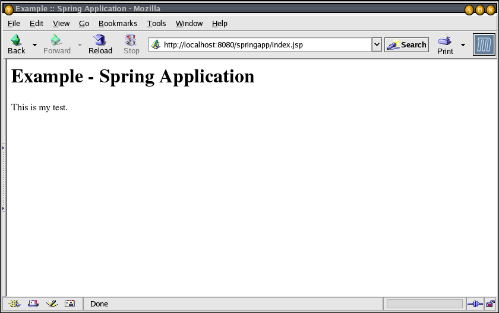
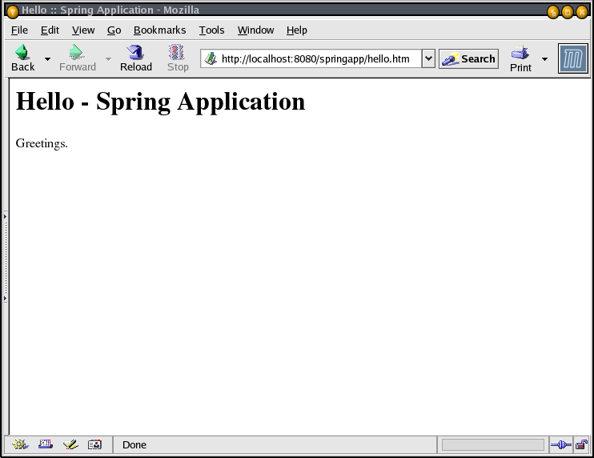

Developing a Spring Framework MVC applicaton step-by-step
Part 1 – Basic Application and Environment Setup
Thomas Risberg
July, 2003
This is a step-by-step account of how to develop a web application from scratch using the Spring Framework.
Prerequisits:
Java SDK (I am currently using version 1.4.1)
Ant (using version 1.5.3)
Apache Tomcat (using version 4.1.24)
You should also be reasonably comfortable using the above software.
I am not going to cover a lot of background information or theory in this document -- there are plenty of books available that covers this in depth. Instead we will dive right into developing the application.
Step 1 – development directory
We are going to need a place to keep all the source and other files we will be creating, so I create a directory that I name 'springapp'. You can place this directory in your home folder or in some other location. I create mine in a 'workspace' directory that I already had in my home directory so the full path to my directory is '/home/trisberg/workspace/springapp'. Inside this directory I create a 'src' directory to hold all Java source files. Then I create another directory that I name 'war'. This directory will hold everything that should go into the WAR file, that we would use to deploy our application. All source files other than Java source, like JSPs and configuration files, belongs in this directory.
Step 2 – index.jsp
I will start by creating a JSP page named 'index.jsp' in the war directory. This is the entry point for our application.
|
springapp/war/index.jsp |
<html> <head><title>Example :: Spring Application</title></head> <body> <h1>Example - Spring Application</h1> <p>This is my test.</p> </body> </html> |
Just to have a complete web application, I create a web.xml in a WEB-INF directory that I create under the war directory.
|
springapp/war/WEB-INF/web.xml |
<?xml version="1.0" encoding="UTF-8"?> <!DOCTYPE web-app PUBLIC '-//Sun Microsystems, Inc.//DTD Web Application 2.3//EN' 'http://java.sun.com/dtd/web-app_2_3.dtd'> <web-app> </web-app> |
Step 3 – deploying the application to Tomcat
Next, I write an Ant buildscript that we are going to use throughout this document. There are tasks for building and deploying the application. There are also tasks for controlling the application under Tomcat.
|
springapp/build.xml |
<?xml version="1.0"?>
<project name="springapp" basedir="." default="usage">
<property file="build.properties"/>
<property name="src.dir" value="src"/>
<property name="web.dir" value="war"/>
<property name="build.dir" value="${web.dir}/WEB-INF/classes"/>
<property name="name" value="springapp"/>
<path id="master-classpath">
<fileset dir="${web.dir}/WEB-INF/lib">
<include name="*.jar"/>
</fileset>
<fileset dir="${tomcat.home}/common/lib">
<include name="servlet.jar"/>
</fileset>
</path>
<target name="usage">
<echo message=""/>
<echo message="${name} build file"/>
<echo message="-----------------------------------"/>
<echo message=""/>
<echo message="Available targets are:"/>
<echo message=""/>
<echo message="build --> Build the application"/>
<echo message="deploy --> Deploy application as directory"/>
<echo message="deploywar --> Deploy application as a WAR file"/>
<echo message="install --> Install application in Tomcat"/>
<echo message="reload --> Reload application in Tomcat"/>
<echo message="start --> Start Tomcat application"/>
<echo message="stop --> Stop Tomcat application"/>
<echo message="list --> List Tomcat applications"/>
<echo message=""/>
</target>
<target name="build" description="Compile main source tree java files">
<mkdir dir="${build.dir}"/>
<javac destdir="${build.dir}" target="1.3" debug="true"
deprecation="false" optimize="false" failonerror="true">
<src path="${src.dir}"/>
<classpath refid="master-classpath"/>
</javac>
</target>
<target name="deploy" depends="build" description="Deploy application">
<copy todir="${tomcat.home}/webapps/${name}" preservelastmodified="true">
<fileset dir="${web.dir}">
<include name="**/*.*"/>
</fileset>
</copy>
</target>
<target name="deploywar" depends="build" description="Deploy application as a WAR file">
<war destfile="${name}.war"
webxml="${web.dir}/WEB-INF/web.xml">
<fileset dir="${web.dir}">
<include name="**/*.*"/>
</fileset>
</war>
<copy todir="${deploy.path}" preservelastmodified="true">
<fileset dir=".">
<include name="*.war"/>
</fileset>
</copy>
</target>
<!-- ============================================================== -->
<!-- Tomcat tasks - remove these if you don't have Tomcat installed -->
<!-- ============================================================== -->
<taskdef name="install" classname="org.apache.catalina.ant.InstallTask">
<classpath>
<path location="${tomcat.home}/server/lib/catalina-ant.jar"/>
</classpath>
</taskdef>
<taskdef name="reload" classname="org.apache.catalina.ant.ReloadTask">
<classpath>
<path location="${tomcat.home}/server/lib/catalina-ant.jar"/>
</classpath>
</taskdef>
<taskdef name="list" classname="org.apache.catalina.ant.ListTask">
<classpath>
<path location="${tomcat.home}/server/lib/catalina-ant.jar"/>
</classpath>
</taskdef>
<taskdef name="start" classname="org.apache.catalina.ant.StartTask">
<classpath>
<path location="${tomcat.home}/server/lib/catalina-ant.jar"/>
</classpath>
</taskdef>
<taskdef name="stop" classname="org.apache.catalina.ant.StopTask">
<classpath>
<path location="${tomcat.home}/server/lib/catalina-ant.jar"/>
</classpath>
</taskdef>
<target name="install" description="Install application in Tomcat">
<install url="${tomcat.manager.url}"
username="${tomcat.manager.username}"
password="${tomcat.manager.password}"
path="/${name}"
war="${name}"/>
</target>
<target name="reload" description="Reload application in Tomcat">
<reload url="${tomcat.manager.url}"
username="${tomcat.manager.username}"
password="${tomcat.manager.password}"
path="/${name}"/>
</target>
<target name="start" description="Start Tomcat application">
<start url="${tomcat.manager.url}"
username="${tomcat.manager.username}"
password="${tomcat.manager.password}"
path="/${name}"/>
</target>
<target name="stop" description="Stop Tomcat application">
<stop url="${tomcat.manager.url}"
username="${tomcat.manager.username}"
password="${tomcat.manager.password}"
path="/${name}"/>
</target>
<target name="list" description="List Tomcat applications">
<list url="${tomcat.manager.url}"
username="${tomcat.manager.username}"
password="${tomcat.manager.password}"/>
</target>
<!-- End Tomcat tasks -->
</project>
|
This script now contains all the targets that we are going to need to make our development efforts easier. I am not going to cover this script in detail since most if not all of it is pretty much standard Ant and Tomcat stuff. You can just copy the above build file and put it at the root of your development directory tree. We also need a build.properties file that you should customize to match your server installation. This file belongs in the same directory as the build.xml file.
|
springapp/build.properties |
# Ant properties for building the springapp deploy.path=/home/trisberg/jakarta-tomcat-4.1.24/webapps #deploy.path=c:/Tomcat 4.1/webapps #deploy.path=c:/bea/user_projects/domains/mydomain/applications tomcat.home=/home/trisberg/jakarta-tomcat-4.1.24 #tomcat.home= c:/Tomcat 4.1 tomcat.manager.url=http://localhost:8080/manager tomcat.manager.username=admin tomcat.manager.password=tomcat |
If you are on a system where you are not the owner of the Tomcat install, then the Tomcat owner must either grant you full access to the webapps directory or the owner must create a new directory named 'springapp' in the 'webapps' directory of the Tomcat installation, and also give you full rights to deploy to this newly created directory. On Linux I run the command chmod a+rwx springapp to give everybody full rights to this directory.
If you are using a different web application server, then you can remove the Tomcat specific tasks at the end of the build script. You will have to rely on yor server's hot deploy feature, or you will have to stop and start your application manually.
Now I run Ant to make sure that everything is working OK. You should have your current directory set to the 'springapp' directory.
[trisberg@localhost springapp]$ ant
Buildfile: build.xml
usage:
[echo] springapp build file
[echo] -----------------------------------
[echo] Available targets are:
[echo] build --> Build the application
[echo] deploy --> Deploy application as directory
[echo] deploywar --> Deploy application as a WAR file
[echo] install --> Install application in Tomcat
[echo] reload --> Reload application in Tomcat
[echo] start --> Start Tomcat application
[echo] stop --> Stop Tomcat application
[echo] list --> List Tomcat applications
BUILD SUCCESSFUL
Total time: 2 seconds
|
Last action here is to do the actual deployment. Just run Ant and specify 'deploy' or 'deploywar' as the target.
[trisberg@localhost springapp]$ ant deploy
Buildfile: build.xml
deploy:
[copy] Copying 1 file to /home/trisberg/jakarta-tomcat-4.1.24/webapps/springapp
BUILD SUCCESSFUL
Total time: 2 seconds
|
Step 4 – Test the application
Let's just quickly start Tomcat and make sure that we can access the application. Use the 'list' task from our build file to see if Tomcat has picked up the new application.
[trisberg@localhost springapp]$ ant list
Buildfile: build.xml
list:
[list] OK - Listed applications for virtual host localhost
[list] /admin:running:0:../server/webapps/admin
[list] /webdav:running:0:/home/trisberg/jakarta-tomcat-4.1.24/webapps/webdav
[list] /springapp:running:0:/home/trisberg/jakarta-tomcat-4.1.24/webapps/springapp/
[list] /examples:running:0:examples
[list] /tomcat-docs:running:0:/home/trisberg/jakarta-tomcat-4.1.24/webapps/tomcat-docs
[list] /:running:0:/home/trisberg/jakarta-tomcat-4.1.24/webapps/ROOT
[list] /manager:running:0:../server/webapps/manager
BUILD SUCCESSFUL
Total time: 1 second
|
If it is not listed, use the 'install' task to get the application installed in Tomcat.
[trisberg@localhost springapp]$ ant install Buildfile: build.xml install: [install] OK - Installed application at context path /springapp BUILD SUCCESSFUL Total time: 2 seconds |
Now open a browser and browse to http://localhost:8080/springapp/index.jsp.

Step 5 – Download Spring distribution
If you have not already downloaded the Spring Framework Release file, now is the time to do so. I am currently using 'spring-framework-0.9.zip' that can be downloaded from www.springframework.org/download.html. I unzipped this file in my home directory. We are going to use several files from this download later on.
This completes the setup of the environment that is necessary, and now we can start actually developing our Spring Framework MVC application.
Step 6 – Create WEB-INF and web.xml
Go to the 'springapp/war/ WEB-INF' directory. Modify the minimal 'web.xml' file that we created earlier. Now we will modify it to suite our needs. We define a DispatcherServlet that is going to control where all our request are routed based on information we will enter at a later point. It also has a standard servlet-mapping entry that maps to the url patterns that we will be using. I have decided to let any url with an '.htm' extension be routed to the 'springapp' dispatcher.
|
springapp/war/WEB-INF/web.xml |
<?xml version="1.0" encoding="UTF-8"?>
<!DOCTYPE web-app PUBLIC '-//Sun Microsystems, Inc.//DTD Web Application 2.3//EN' 'http://java.sun.com/dtd/web-app_2_3.dtd'>
<web-app>
<servlet>
<servlet-name>springapp</servlet-name>
<servlet-class>com.interface21.web.servlet.DispatcherServlet</servlet-class>
<load-on-startup>1</load-on-startup>
</servlet>
<servlet-mapping>
<servlet-name>springapp</servlet-name>
<url-pattern>*.htm</url-pattern>
</servlet-mapping>
<welcome-file-list>
<welcome-file>
index.jsp
</welcome-file>
</welcome-file-list>
</web-app>
|
Next, create a file called 'springapp-servlet.xml' in the springapp/war/WEB-INF directory (you can copy an example of this file from the Spring distributions sample/skeletons/webapp-minimal directory). This is the file where definitions used by the DispatcherServlet should be entered. It is named based on the servlet-name from web.xml with '-servlet' appended. This is a standard naming convention used in the Spring Framework. Now, add a bean entry named springappController and make the class SpringappController. This defines the controller that our application will be using. We also need to add a url mapping so the DispatcherServlet knows which controller shold be invoked for different url:s.
|
springapp/war/WEB-INF/springapp-servlet.xml |
<?xml version="1.0" encoding="UTF-8"?>
<!DOCTYPE beans PUBLIC "-//SPRING//DTD BEAN//EN" "http://www.springframework.org/dtd/spring-beans.dtd">
<!--
- Application context definition for "springapp" DispatcherServlet.
-->
<beans>
<bean id="springappController" class="SpringappController"/>
<bean id="urlMapping" class="com.interface21.web.servlet.handler.SimpleUrlHandlerMapping">
<property name="mappings">
<props>
<prop key="/hello.htm">springappController</prop>
</props>
</property>
</bean>
</beans>
|
Step 7 – Copy jars to WEB-INF/lib
From the Spring distribution, copy spring-full-0.9.jar (/spring-framework-0.9/dist/spring-full-0.9.jar) to a war/WEB-INF/lib directory. Also copy log4j jars to the war/WEB-INF/lib directory (spring-framework-0.9/lib/log4j/*.jar). These jars will be deployed to the server and they are also used during the build process.
Step 8 – Create your Controller
Create your Controller – I named mine SpringappController.java and placed it a new springapp/src directory.
|
springapp/src/SpringappController.java |
import com.interface21.web.servlet.mvc.Controller;
import com.interface21.web.servlet.ModelAndView;
import javax.servlet.ServletException;
import javax.servlet.http.HttpServletRequest;
import javax.servlet.http.HttpServletResponse;
import java.io.IOException;
public class SpringappController implements Controller {
public ModelAndView handleRequest(HttpServletRequest request, HttpServletResponse response)
throws ServletException, IOException {
return new ModelAndView("");
}
}
|
This is as basic a Controller as you can use. We will be expanding this later on, and we will also later on extend some provided abstract base implementations. The Controller “handles” the requst and returns a ModelAndView. We have not yet defined any Views, so right now there is nothing to do.
Step 9 – Build the Application
Run the 'build' task of the build.xml. Hopefully the code compiles OK.
[trisberg@localhost springapp]$ ant build
Buildfile: build.xml
build:
[javac] Compiling 1 source file to /home/trisberg/workspace/springapp/war/WEB-INF/classes
BUILD SUCCESSFUL
Total time: 2 seconds
|
Step 10 – Copy and modify log4j.properties
The Spring Framework uses log4j for logging so we have to create a configuration file for log4j. Copy the log4j.properties from the sample Petclinic application (spring-framework-0.9/samples/petclinic/war/WEB-INF/classes/log4j.properties) to the war/WEB-INF/classes directory (this directory should have been created in the previuos step). Now change the name and location of the logfile that will be written. I decided to have it written to the same directory as all other Tomcat logs.
|
springapp/war/WEB-INF/classes/log4j.properties |
log4j.rootCategory=INFO, stdout, logfile log4j.appender.stdout=org.apache.log4j.ConsoleAppender log4j.appender.stdout.layout=org.apache.log4j.PatternLayout log4j.appender.stdout.layout.ConversionPattern=%d %p [%c] - <%m>%n log4j.appender.logfile=org.apache.log4j.RollingFileAppender log4j.appender.logfile.File=/home/trisberg/jakarta-tomcat-4.1.24/logs/springapp.log log4j.appender.logfile.MaxFileSize=512KB # Keep three backup files log4j.appender.logfile.MaxBackupIndex=3 log4j.appender.logfile.layout=org.apache.log4j.PatternLayout #Pattern to output : date priority [category] - <message>line_separator log4j.appender.logfile.layout.ConversionPattern=%d %p [%c] - <%m>%n |
Step 11 – Deploy Application
Run the 'deploy' task and then the 'stop' and 'start' tasks of the build.xml. This will force a reload of the application. We have to check the Tomcat logs for any deployment errors – there could be typos in the above xml files or there could be missing classes or jar files. This is an example of what it should look like. (/home/trisberg/jakarta-tomcat-4.1.24/logs/springapp.log)
2003-07-01 17:34:43,702 INFO [com.interface21.web.servlet.DispatcherServlet] - <Servlet with name 'springapp' entering init...>
2003-07-01 17:34:43,747 INFO [com.interface21.beans.CachedIntrospectionResults] - <Getting BeanInfo for class class com.interface21.web.servlet.DispatcherServlet>
2003-07-01 17:34:43,800 INFO [com.interface21.web.servlet.DispatcherServlet] - <Framework servlet 'springapp' init>
2003-07-01 17:34:43,837 INFO [com.interface21.web.context.support.XmlWebApplicationContext] - <Using config location '/WEB-INF/springapp-servlet.xml'>
2003-07-01 17:34:43,869 INFO [com.interface21.beans.factory.xml.XmlBeanFactory] - <Loading XmlBeanFactory from InputStream [java.io.ByteArrayInputStream@20f443]>
2003-07-01 17:34:43,928 INFO [com.interface21.beans.factory.xml.XmlBeanFactory] - <Cached shared instance of Singleton bean 'springappController'>
2003-07-01 17:34:43,929 INFO [com.interface21.beans.CachedIntrospectionResults] - <Getting BeanInfo for class class SpringappController>
2003-07-01 17:34:43,947 INFO [com.interface21.web.context.support.XmlWebApplicationContext] - <BeanFactory for application context is [class com.interface21.beans.factory.xml.XmlBeanFactory: defined beans [springappController]]>
2003-07-01 17:34:43,947 INFO [com.interface21.web.context.support.XmlWebApplicationContext] - <1 beans defined in ApplicationContext: WebApplicationContext for namespace 'springapp-servlet'>
2003-07-01 17:34:43,948 INFO [com.interface21.web.context.support.XmlWebApplicationContext] - <Configuring singleton beans in context>
2003-07-01 17:34:43,948 INFO [com.interface21.web.context.support.XmlWebApplicationContext] - <Refreshing listeners>
2003-07-01 17:34:43,949 INFO [com.interface21.web.context.support.XmlWebApplicationContext] - <No options bean ("contextOptions") found: using default>
2003-07-01 17:34:43,951 WARN [com.interface21.web.context.support.XmlWebApplicationContext] - <No MessageSource found for: WebApplicationContext for namespace 'springapp-servlet'>
2003-07-01 17:34:43,963 WARN [com.interface21.ui.context.support.UiApplicationContextUtils] - <No ThemeSource found, default created>
2003-07-01 17:34:43,970 INFO [com.interface21.web.servlet.DispatcherServlet] - <Servlet with name 'springapp' loaded child context ApplicationContext: displayName=**WebApplicationContext for namespace 'springapp-servlet''**;
class=[com.interface21.web.context.support.XmlWebApplicationContext]; BeanFactory={class com.interface21.beans.factory.xml.XmlBeanFactory: defined beans [springappController]}; }
MessageSource={com.interface21.context.support.StaticMessageSource@1f0b7d3}; ContextOptions={com.interface21.context.ContextOptions: reloadable=true}; Startup date=Tue Jul 01 17:34:43 EDT 2003; ROOT of ApplicationContext
hierarchy; config path='/WEB-INF/springapp-servlet.xml'; >
2003-07-01 17:34:43,970 INFO [com.interface21.web.servlet.DispatcherServlet] - <Bound servlet's context in global ServletContext with name 'com.interface21.web.servlet.FrameworkServlet.CONTEXT.springapp'>
2003-07-01 17:34:43,972 INFO [com.interface21.web.servlet.DispatcherServlet] - <Unable to load locale resolver with name 'localeResolver': using default [com.interface21.web.servlet.i18n.AcceptHeaderLocaleResolver@35bb0f]>
2003-07-01 17:34:43,976 INFO [com.interface21.web.servlet.DispatcherServlet] - <Unable to load theme resolver with name 'themeResolver': using default [com.interface21.web.servlet.theme.FixedThemeResolver@20fa83]>
2003-07-01 17:34:43,986 INFO [com.interface21.web.servlet.DispatcherServlet] - <No HandlerMappings found in servlet 'springapp': using default>
2003-07-01 17:34:43,986 INFO [com.interface21.web.servlet.DispatcherServlet] - <Dispatcher servlet 'springapp': Initializing default HandlerAdapter>
2003-07-01 17:34:44,214 INFO [com.interface21.web.servlet.DispatcherServlet] - <No HandlerAdapters found in servlet 'springapp': using default>
2003-07-01 17:34:44,214 INFO [com.interface21.web.servlet.DispatcherServlet] - <Unable to load view resolver: bean with name 'viewResolver': using default ViewResolver [null]>
2003-07-01 17:34:44,228 INFO [com.interface21.web.servlet.DispatcherServlet] - <Framework servlet 'springapp' init completed in 428 ms>
2003-07-01 17:34:44,228 INFO [com.interface21.web.servlet.DispatcherServlet] - <Servlet with name 'springapp' configured successfully>
|
Step 12 – Create a View
Now it is time to create our first view. I will use a JSP page that I decided to name hello.jsp. I'll put it in the war directory to begin with.
|
springapp/war/hello.jsp |
<html> <head><title>Example :: Spring Application</title></head> <body> <h1>Hello - Spring Application</h1> <p>Greetings.</p> </body> </html> |
Nothing fancy here, but it will do for now. Next we have to modify the SpringappController to forward to this view.
|
springapp/src/SpringappController.java |
import com.interface21.web.servlet.mvc.Controller;
import com.interface21.web.servlet.ModelAndView;
import javax.servlet.ServletException;
import javax.servlet.http.HttpServletRequest;
import javax.servlet.http.HttpServletResponse;
import java.io.IOException;
import org.apache.commons.logging.Log;
import org.apache.commons.logging.LogFactory;
public class SpringappController implements Controller {
/** Logger for this class and subclasses */
protected final Log logger = LogFactory.getLog(getClass());
public ModelAndView handleRequest(HttpServletRequest request, HttpServletResponse response)
throws ServletException, IOException {
logger.info("SpringappController - returning hello view");
return new ModelAndView("hello.jsp");
}
}
|
While I was modifying this class, I also added a logger so we can verify that we actually got here. Changes are higlighted in red. The model that this class returns is actually resolved via a ViewResolver. Since we have not specified a specific one, we are going to get a default one that just forwards to a url matching the name of the view specified. We will modify this later on.
Now compile and deploy the application. After instructing Tomcat to stop and then start the application, everything should get reloaded.
Let's try it in a browser – enter the url http://localhost:8080/springapp/hello.htm and we should see the following:

We can also check the log – I'm only showing the last entries, but we can see that the controller did get invoked and that it forwarded to the hello view. (/home/trisberg/jakarta-tomcat-4.1.24/logs/springapp.log)
2003-07-02 23:44:29,991 INFO [com.interface21.web.servlet.DispatcherServlet] - <Servlet with name 'springapp' configured successfully> 2003-07-02 23:46:47,488 INFO [SpringappController] - <SpringappController - returning hello view> 2003-07-02 23:46:47,492 INFO [com.interface21.web.servlet.view.InternalResourceViewResolver] - <Cached view 'hello.jsp_en_US'> |
Summary
Let's take quick look at the parts of our application that we have created so far.
An intoduction page index.jsp that does not do anything useful. It was just used to test our setup. We will later change this to actually provide a link into our application.
A DispatcherServlet with a corresponding springapp-servlet.xml configuration file.
A controller springappController.java with limited functionality – it just forwards a ModelAndView to the ViewResolver. Actualy, we only have an empty model so far, but we will fix this later.
A view hello.jsp that again is extremely basic. But the whole setup works and we are now ready to add more functionality.
Back Part 2 – Developing and Configuring the Application
Copyright © 2003, Thomas Risberg